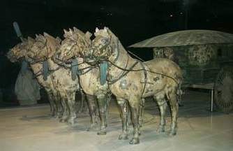

|
秦始皇陵墓
还是在当秦王（公元前247年）时，秦始皇就开始给自己修 陵墓。陵墓选在骊山脚下，因为这里是秦的都城。秦始皇陵墓从 公元前247年开始修建，到公元前208年秦末农民起义，秦王朝危 在旦夕时，才由他的儿子秦二世草草完工，前后修了39年。
秦始皇陵整个陵园占地面积为56.25平方公里。封土原高50丈，合今天的115米。封土下面就是地宫。地宫呈方形，秦始皇 陵的一切建筑都是以地宫为中心，地宫墙外便是陵园的内外城垣 。内城附近有赔葬墓，西侧还有一处地下建筑，即珍禽坑。北内 城以内，是皇帝的寝陵。秦始皇陵外城东，除了名扬四海的秦始 皇兵马俑以及马厩坑外，还有一些赔葬墓。1980年，考古工作者 在秦始皇帝陵封土西侧约20米的一座赔葬坑内，发掘出土了两乘 大型彩绘铜车马，是20世纪考古史上发现的结构最复杂、形体最 大的古代青铜器，它重现了秦始皇铜车马銮驾出巡的真实面貌。
关于秦始皇陵的情况，司马迁曾在《史记》中有较详细的描 述，其中的奢华宏伟令人叹为观止。也许正因为如此，秦始皇陵 在建成2100多年多次受到破坏。1961年被中华人民共和国列为全 国重点文物保护单位，1987被联合国列入世界文化遗产保护清单。
“不看金字塔，不算真正到过埃及；不看秦俑，不算真正到过中国。”法国前总理希拉克1987年讲过的这句话，成为秦始皇陵兵马俑在世界各国人们心中的定评。
从古城西安出发，沿着西（安）临（潼）高速公路东行，驶过骊山镇后，向东越过宏伟壮观的秦始皇陵墓，再走1.5公里，就到了举世瞩目的我国目前最大的历史遗址博物馆－－秦始皇兵马俑博物馆。
“江南才子北方将，陕西土地埋皇上”。陕西这块土地上埋葬了65个皇帝，留下了许多珍贵的地上地下文物，秦始皇兵马俑就是这些无数历史宝藏中的一颗最璀璨的明珠。 1974年3月，震惊世界的秦始皇兵马俑破土而出。1975年国务院决定，在秦兵马俑坑遗址上建立博物馆，1979年10月1日，秦始皇兵马俑博物馆建成开馆，迄今已有20年。这座位于骊山北麓、渭水之滨的博物馆吸引着万千中外游客纷至沓来流连忘返。
秦始皇是中国历史第一个真正统一中国的皇帝，在他做秦王时就开始为自己建造陵墓。秦始皇兵马俑就是他地下王国的冥军的象征。秦兵马俑集中埋于三个大小不等的赔葬坑内。按照发现时间的顺序编为一、二、三号坑。三个坑从北向南呈品字排开，总面积达2万多平方米，占地则达5万多平方米。一号坑是由步兵、车兵组成矩形方阵；二号坑由车兵、步兵、骑兵三个兵种组成。三号坑向人们具体向我们显示了古代军事指挥部的实况。秦俑三个坑估计可出土近8000件陶俑，战车100多辆，现已经清理并修复的陶俑有1000多件。据专家研究，修建秦俑动用了70多万民工，总共修建了39年。
中国秦始皇陵随葬陶兵马雕塑群。兵马俑坑发现于1974年，1977年就地建成秦始皇陵兵马俑博物馆。兵马俑坑约始建于公元前221年秦王朝建立后，到前209年因农民起义爆发而中断，不久即被项羽所焚毁。

兵马俑坑共发现4处,均为规模巨大的土木结构建筑。
其中最大的为1号坑，平面长方形,面宽9间,四周绕以回廊，前有5个门道，总面积约12600平方米。列置于其中的6000个兵马俑是以战车、步卒相间排列的长方形军阵。
2号坑平面略呈曲尺形,以隔梁和小门分隔为各自独立又互有联系的4个部分,总面积约6000平方米。兵马俑内容为以战车和骑、步兵混合编组的大型军阵。3号坑面积最小,平面呈凹字形,总面积约520平方米。有驷马漆绘的木质战车，和执殳的仪仗,象征军阵的指挥部。4号坑仅有土坑，可能是一个未建成即被废弃的兵马俑坑。按1、2、3号坑出土兵马俑的排列形式复原，应有武士俑7000个,驷马战车100余辆,战马100余匹，已发掘和修复、陈列的仅为其中的一部分。
陶兵马组合成严整的军阵形式，是秦王朝强大国力和军威的象征。雕塑群巨大的体量和空前的数量、组合关系上的多样统一，形成震撼人心的雄强气势。
陶俑群塑造了不同等级、兵种的秦代将士形象，包括指挥官、步兵、骑兵、车兵、弓弩手等。形体高大魁梧,平均身高约1.75米,指挥官身高在1.95米以上。很多将士手中握着实用的青铜兵器。人物形象塑造的着力点在面相和手足部分。其面相具有关中一带人的形象特征，多数表情刚毅、昂扬奋发。五官位置准确、富于质感，胡须、发式有多种不同的样式，在发式和服饰上都十分注意细节的真实，如不同官职和兵种的盔甲有严格区分，甲片、甲钉、革带均一一塑出，结构准确无误。这些细节的精确表现，有助于烘托秦军装备精良、纪律严明、斗志昂扬的精神状态（见彩图秦始皇陵兵马俑(秦)陕西临潼出土）。
秦俑塑造的特点是模制与捏塑相结合，以粗泥为内胎,外敷细泥,经塑制成型。俑的头、手、躯干都是分制然后套合，加工细部，塑成后入窑烧制，最后进行彩绘。
彩绘的颜色有绿、粉绿、朱红、粉红、紫、蓝、中黄、桔黄、灰、褐、黑、白等色,颜面、手足均朱红色,以黑色绘出眉目、须发。秦俑的形象是类型化的，在细部加工过程中,由于塑造者的审美要求和技艺水平的差异,而出现千差万别，一些优秀作品达到一定程度的个性的表现。
陶马约与真马等大,用于骑兵的战马高1.72米,体长2.03米,剪鬃,马背上塑出鞍具。牵引战车的马匹体形略小，马身比例匀称，筋肉和骨骼的起伏变化符合解剖关系。马头抬起,耳朵向前倾斜,双目睁大,鼻孔翕张,表现出处于临战状态的战马静中有动的神态。陶马也是模制与捏塑相结合制作的，全身施加彩绘。作为兵马俑雕塑群组成部分的木质战车多已朽毁,从遗存的残迹可知,有的原曾髹漆彩绘，并有许多金属车具保存下来。
|